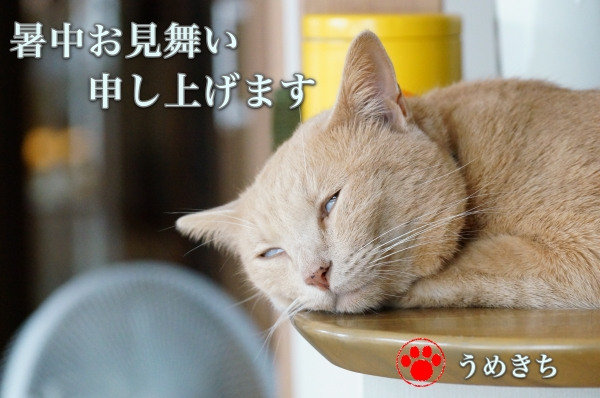

暑中お見舞いは白目にて [梅吉]

梅吉より季節のご挨拶ですm(_ _)m
エアコンの効いた快適なお部屋で日々白目がちにお昼寝する毎日＾＾
我が家付近は連日体感温度37℃ぐらいかな。
外は息苦しい程の暑さ、商業施設や飲食店、電車の中は冷凍庫のよう・・・
体がおかしくなりそうです(⌒-⌒;
皆様もご自愛くださいませ。
☆ちょっとご説明☆
梅吉は夏になると寝入り端になぜか白目がち(*>艸<)
我が家では夏の風物詩、「日本の夏、白目の夏」なのです。
画像加工してませんよ。天然白目＾＾
 ↑ガブッと一押し↑
↑ガブッと一押し↑
おっとの秋田出張土産。
秋田県特別栽培農産物に認定されている「なまはげ米」。
品種はあきたこまちです。粒感のあるお米で美味しかったです。
お米はつぶッとしたちょっと硬めが好き＾＾
お米と一緒にやってきたのは藁の中で発酵させた納豆。
以前空港で入手したものはビニールで包んで藁で巻いてあったのですが
これはダイレクトに藁の中。
ふんわりと藁の香りが移って美味しかったです。
大豆がちょっとゴツゴツしてたのが昔の納豆っぽくてグッド！
最近スーパーで売ってる納豆は豆が柔らかくて納豆臭さが抑え気味で物足りない・・・
ーーーーーーーーーーーーーーーーーーーーーーーーーーーーーーーーーーーーーー
梅吉のうちの子記念日のお祝いで開けた日本酒。
ワイン酵母仕込みの『鳳凰美田 純米吟醸 Wine Cell』
なぜにおとーさんとおかーさんが梅吉くんの記念日に呑んだくれるのですか？
というツッコミは甘んじてお受けします0(≧▽≦)0
でこの日本酒、樽のような香りがして美味しかった！結構旨口。
もちろんワイングラスでいただきました＾＾
入手は最近なんばにオープンしたエディオンにて。
清酒、焼酎、ワイン、ウィスキー等日本国内で作ったお酒がやたら揃ってます。
おそらくなんば付近に大量出没するインバウンド客を狙っての品揃えと思われますが
インバウンド客は一人も見当たらず。
この先大丈夫かしら？と心配になっちゃいます(⌒-⌒;
一升瓶の日本酒・焼酎も沢山あるんですが一升瓶持って飛行機で帰るのは大変ですよねー。
炊飯器とか持って帰る人たちだから平気なの？
私たち日本在住者には朗報かもです。
交通の便は良いところだし観光客相手のお値段でもありません。
この鳳凰美田、ネットの強気なお店だと3000円近くするんですが
ほぼ定価と思われる1900円でゲットしました。
このお店は狙い目かもしれませんよ。
関西圏にお住いのお酒好きの方、ぜひ覗いてみてください＾＾
梅吉より季節のご挨拶ですm(_ _)m
エアコンの効いた快適なお部屋で日々白目がちにお昼寝する毎日＾＾
我が家付近は連日体感温度37℃ぐらいかな。
外は息苦しい程の暑さ、商業施設や飲食店、電車の中は冷凍庫のよう・・・
体がおかしくなりそうです(⌒-⌒;
皆様もご自愛くださいませ。
☆ちょっとご説明☆
梅吉は夏になると寝入り端になぜか白目がち(*>艸<)
我が家では夏の風物詩、「日本の夏、白目の夏」なのです。
画像加工してませんよ。天然白目＾＾
おっとの秋田出張土産。
秋田県特別栽培農産物に認定されている「なまはげ米」。
品種はあきたこまちです。粒感のあるお米で美味しかったです。
お米はつぶッとしたちょっと硬めが好き＾＾
お米と一緒にやってきたのは藁の中で発酵させた納豆。
以前空港で入手したものはビニールで包んで藁で巻いてあったのですが
これはダイレクトに藁の中。
ふんわりと藁の香りが移って美味しかったです。
大豆がちょっとゴツゴツしてたのが昔の納豆っぽくてグッド！
最近スーパーで売ってる納豆は豆が柔らかくて納豆臭さが抑え気味で物足りない・・・
ーーーーーーーーーーーーーーーーーーーーーーーーーーーーーーーーーーーーーー
梅吉のうちの子記念日のお祝いで開けた日本酒。
ワイン酵母仕込みの『鳳凰美田 純米吟醸 Wine Cell』
なぜにおとーさんとおかーさんが梅吉くんの記念日に呑んだくれるのですか？
というツッコミは甘んじてお受けします0(≧▽≦)0
でこの日本酒、樽のような香りがして美味しかった！結構旨口。
もちろんワイングラスでいただきました＾＾
入手は最近なんばにオープンしたエディオンにて。
清酒、焼酎、ワイン、ウィスキー等日本国内で作ったお酒がやたら揃ってます。
おそらくなんば付近に大量出没するインバウンド客を狙っての品揃えと思われますが
インバウンド客は一人も見当たらず。
この先大丈夫かしら？と心配になっちゃいます(⌒-⌒;
一升瓶の日本酒・焼酎も沢山あるんですが一升瓶持って飛行機で帰るのは大変ですよねー。
炊飯器とか持って帰る人たちだから平気なの？
私たち日本在住者には朗報かもです。
交通の便は良いところだし観光客相手のお値段でもありません。
この鳳凰美田、ネットの強気なお店だと3000円近くするんですが
ほぼ定価と思われる1900円でゲットしました。
このお店は狙い目かもしれませんよ。
関西圏にお住いのお酒好きの方、ぜひ覗いてみてください＾＾

カフェオレ色の梅吉

梅吉 2023年8月10日 永眠


梅吉と出会った譲渡会

犬猫の理由なき殺処分ゼロ
妄想広告
UMEKICHI 光

爆発的に早い！
時々攻撃的！
Thanks to Mr.Boss365
爆発的に早い！
時々攻撃的！
Thanks to Mr.Boss365

梅吉さんスンバラシイ白目のご挨拶ありがとうございます。
他の追随を許さない完璧な白目でございますね。
by zombiekong (2019-08-05 00:35)
なんと！白目がちになるのは
夏が多いのですか！！！
Ｌｅａは季節関係ありません(;^_^A
by きぃ (2019-08-05 06:10)
良いですねぇ。
我が家も白目の出現率が増えてます＾＾
by ぽちの輔 (2019-08-05 06:37)
ナイス白目♡
納豆くさい納豆が食べたいっ！です。
by liang (2019-08-05 06:51)
我が家も白目が落ちてますw
うちは夏も冬も変わらず白目なのは
緩みきってる証拠でしょうか(⌒-⌒; )
白目って一瞬涼しくなりますよねぇw
梅吉さん、涼しくなる暑中お見舞いありがとうございます=(^.^)=
by ニッキー (2019-08-05 07:27)
梅吉さんが白目になるときは、暑中見舞いなんですね^^
by ニコニコファイト (2019-08-05 07:30)
梅吉さんのご挨拶、有り難うございます(^^)
夫さん、秋田に来られたのですね。辺鄙なところでビックリされた事と思います。でも食には恵まれ、釣り人には天国みたいな地ですが、未だに陸の孤島と呼ばれています(^_^;)
でも、色と自然には恵まれていますので、機会があればちぃさんも今度は是非足を伸ばしてくださいね!
by kou (2019-08-05 07:48)
梅吉さんの暑中お見舞いで 体温が1度下がりました(^^)ありがと！
藁納豆、子供の頃に食べたきり懐かしいです
by チャー (2019-08-05 08:33)
梅吉さんはエアコンの効いたところで白めで寝ちゃうのですね！
藁の納豆は茨城に行くと買ってきます(^^)
by ma2ma2 (2019-08-05 08:58)
こんにちは。
ご丁寧な白目・梅吉くんの暑中見舞い有難うございます。
笑いで涼しくなった感じです（笑）。
「日本の夏、白目の夏」初めて見る人は緊張（キンチョー）の夏ですね（笑）
連日の猛暑？体調にはくれぐれもお気をつけ下さい。
「藁の中で発酵させた納豆」美味しそうです。白米が進みそうです。
最近、お酒飲まなくなったので色々と困っています・・・
自宅で日本酒？梅吉くんも喜んでいますね！？(=^･ｪ･^=)
by Boss365 (2019-08-05 11:43)
はい、関西に住まう酒好きです(^▽^;)
まだエディオン行ったことがないので、先日記事で拝見した札幌ラーメンも気になっているので、行ってみたいと思います♪
お猫様の記念日、誕生日などを理由に下僕が飲んだくれる、酒好きの家に暮らす猫は避けて通れない宿命ですね(≧▽≦)
我が家でも「とーちゃん、かーちゃん、酔っぱらってるから踏まれないよう気を付けて」と、こてつに必ず声をかけるようにしています^^
梅吉さんの白目の夏は究極のリラックスモード。
暑い日の正しい過ごし方ですね！
by ゆきち (2019-08-05 12:21)
芸術的な白目ですね(≧∀≦)
『日本の夏・白目の夏』でババーンと花火が上がる
風景が浮かんできますｗｗ
記念日なのですから、飲んだくれていいのです(笑)
ナンバのエディオンですかー。
最近ミナミにはほぼ行かなくなっちゃいました＾＾
この辺りはとくにC国等の観光客が多いですからね。
でも液体ものを持って帰るのは大変だから
そこを狙うのはどうでしょーね(￣▽￣;)
by カトリーヌ (2019-08-05 13:42)
梅吉さんの白目の夏♪ 満喫中ですね。瞼が暑さでとろけちゃう？
エディオンでお酒を売っているのですか！ほほ～
電気屋さんがドンキ化してきてますね（笑
C国との関係はまぁまぁですがK国との関係悪化で少しお客様も減っている？
のではないかと思われますが・・・どんな感じでしょう。
藁にまみれた納豆食べたことないです。
ワイン公募仕込みの日本酒とな～！！むむ～気になる(^^
by marimo (2019-08-05 16:00)
白目ーーー！お見事でございます。
乾燥しちゃわないか心配になってしまいますよ。
いやー、暑いですねぇ。車載の温度計が40℃表示でぶったまげました。
うちの子記念日に美味しいお酒。良いじゃないですか！
これぞお猫様と暮らす者のあるべき姿と思いまするよ。
by ChatBleu (2019-08-05 16:15)
エアコンの効きすぎた部屋で寝ていて夏風邪をひきました。
寒気がしてきて熱が出ました。
今はもうよくなりました。
熱中症予防でエアコンに助けてもらおうとして、逆に風邪をこじらせてしまいました。夏は体調管理が無づかしいですね。
納豆は大好きなので、時々食べます。
でも藁に入った納豆は食べてことがりません。
一度、食べてみたい＾＾
by riverwalk (2019-08-05 20:31)
やっぱり、こう暑いと目を瞑る力も緩んじゃうのかな？ ^^;
最近、家電店も薬局も品揃えが豊富ですよね。
納豆、好きなのですがここ最近食べておりません。
藁で包まれた納豆、一度食べてみたいです。^^)
by yes_hama (2019-08-05 21:34)
梅吉さんの白目の暑中見舞いいただきました（笑）
天然白目、夏の風物詩、いいですね〜
天然物見応えありです（笑）
ちぃさん夫殿の出張土産の『なまはげ米』
重かったでしょうに、素敵なお土産です。
by kiki (2019-08-05 21:59)
白目は、バテてる証拠？
ニャンコにとって夏は大敵だニャ（ﾟ□ﾟ）
by 英ちゃん (2019-08-05 22:59)
暑さのあまり白目になっちゃったのかと
びっくりしました（苦笑）
by 藤並 香衣 (2019-08-05 23:16)
うぉぉぉ～白目～！
暑さにやられて気絶しちゃったのかと思いました(^-^;
藁にくるんだ納豆ってほんと美味しそうですね。
by yamatonosuke (2019-08-06 01:13)
朝から白目に萌えまくり、にやにやしました。
良い一日になりそうだ。
暑いけど白髪染めに行ってくるわ！(笑)
こういう納豆は間違いなく美味しい。
水戸にいったときに、納豆いろいろ買ってきたこと思い出したわ。
ほんと、スーパーの納豆は物足りないよね。
友人の工務店で雇っているベトナムの子の親に挨拶にいくために
友人がベトナムにいったとき、ダイソーの扇風機を手荷物で持っていってあげたそうです。飛行機の中には、炊飯器を持ってる帰省すると思われる地元の人たちで溢れていたみたいよ。
鳳凰美田純米吟醸。ワイン酵母仕込み、
年度は違うけど飲んだことある！
お店で飲んで美味しいなーって思って、ネットで値段見て買うのやめたんだもん(笑)
いいなー。ほぼ定価！！
by リュカ (2019-08-06 08:33)
「天然白目」。もうこの表現だけで笑えるわー(^｡^)
そしてこの納豆！！スチレン容器のを見慣れてると
全く別の食材に見えます。
藁の香り、どんなんだろうー？？(￣∇￣)
by よーちゃん (2019-08-06 09:04)
梅吉さんったらっ・・♪
by yuppie (2019-08-06 13:47)
『ねこがかわいいだけ展』で、
一般の人が写真参加しているのですが、
白目の金メダルはこてつくんだと確信してきました（笑）
by kiki (2019-08-06 22:26)
わー立派な白目^^。
寝る時って、黒目を保護するためにくるっと奥に回ってるのだそうで、
これは、正しい眠り方？
最近は電気屋さんでお安くお酒買えますね。
by nachic (2019-08-07 13:37)